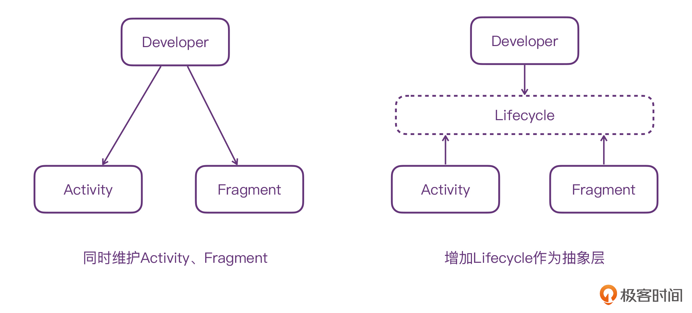
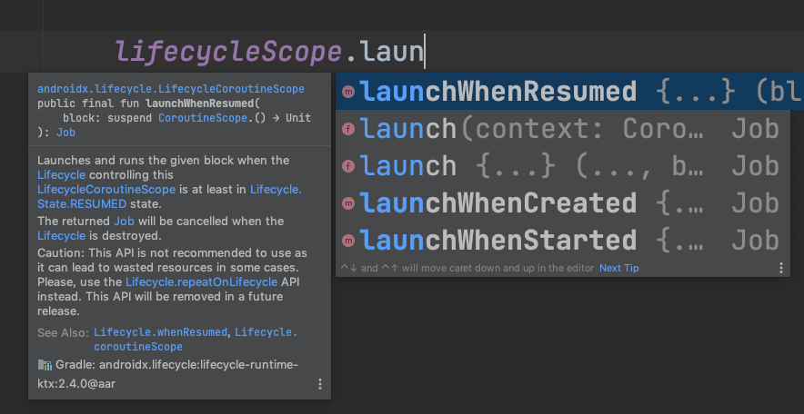

AudioKotlin与Jetpack简直是天生一对！
你好，我是朱涛。今天，我们来聊聊 Android 的 Jetpack。
在我看来，Kotlin 和 Jetpack，它们两个简直就是天生一对。作为 Android 开发者，如果只用 Kotlin 不用 Jetpack，我们其实很难在 Android 平台充分发挥 Kotlin 的语言优势。而如果我们只用 Jetpack 而不用 Kotlin，那么，我们将只能用到 Jetpack 的小部分功能。毕竟，Jetpack 当中有很多 API 和库，是专门为 Kotlin 提供的。
经过前面课程内容的学习，相信现在你已经对 Kotlin 十分熟悉了，那么，接下来就让我们来看看 Jetpack 吧！这节课里，我会为你介绍 Jetpack 核心库的基本概念、简单用法，以及它跟 Kotlin 之间的关系，从而也为我们下节课的实战项目打下基础。
Jetpack 简介
Jetpack，它有“喷气式背包”的意思。对于我们开发者来说，它其实就是 Google 官方为我们提供的一套开发套件，专门用来帮助 Android 开发者提升开发效率、提升应用稳定性的。
Android Jetpack，最初的宣传图标，就是“穿着喷气式背包的 Android 机器人”。大概意思就是：有了 Jetpack，Android 就能“起飞了”。这当然只是一种夸张的比喻，不过，从我实际的开发体验来说，Jetpack 确实可以给 Android 开发者带来极大的好处，尤其是当 Jetpack 与 Kotlin 结合到一起的情况下。
我们先来了解下 KTX。
KTX
KTX 是 Jetpack 当中最特殊的一类库，它是由 Kotlin 编写的，同时也仅为 Kotlin 开发者服务，使用 Java 语言的 Android 开发者是用不了的。KTX，它的作用其实是对当前 Android 生态当中的 API 进行额外补充。它依托 Kotlin 的扩展能力，为 Android 原有 API 增加新的：扩展函数、扩展属性、高阶函数、命名参数、参数默认值、协程支持。
如果我们想要使用 KTX 的核心功能，我们需要单独进行依赖：
// 代码段1
dependencies {
implementation "androidx.core:core-ktx:1.7.0"
}让我们来看一个关于 SharedPreference 的简单例子，如果我们使用 Java，我们大概率是需要写一堆模板代码的，类似这样：
// 代码段2
SharedPreferences sharedPreferences= getSharedPreferences("data",Context.MODE_PRIVATE);
SharedPreferences.Editor editor = sharedPreferences.edit();
editor.putString(SP_KEY_RESPONSE, response);
editor.commit();
editor.apply();不过，如果我们有了 KTX，那么代码就会变得极其简单：
// 代码段3
preference.edit { putBoolean("key", value) }上面的这个 edit() 方法，其实是一个高阶函数，它是由 KTX 提供的，如果你去看它的源代码，会发现，它其实就是一个扩展出来的高阶函数：
// 代码段4
inline fun SharedPreferences.edit(
commit: Boolean = false,
action: SharedPreferences.Editor.() -> Unit
) {
val editor = edit()
action(editor)
if (commit) {
editor.commit()
} else {
editor.apply()
}
}可以看到，KTX 其实就是将一些常见的模板代码封装了起来，然后以扩展函数的形式提供给开发者。虽然它自身的原理很简单，但是却可以大大提升开发者的效率。
KTX 除了能够扩展 Android SDK 的 API 以外，它还可以扩展 Jetpack 当中其他的库，比如说 LiveData、Room 等等。接下来，我们就来看看 Jetpack 当中比较核心的库：Lifecycle。
Lifecycle
Lifecycle，其实就是 Android 的生命周期组件。在整个 Jetpack 组件当中的地位非常特殊，是必学的组件。举个例子，其他的组件比如 WorkManager，如果我们实际工作中用不上，那么我们不去学它是不会有什么问题的。Lifecycle 不一样，只要我们是做 Android 开发的，我们就绕不开 Lifecycle。Activity 里面有 Lifecycle；Fragment 里面也有；LiveData 里面也有；
ViewModel 底层也用到了 Lifecycle；使用协程也离不开 Lifecycle。
那么，Lifecycle 到底是什么呢？我们平时提到生命周期，往往都是说的 Activity、Fragment，而它们两者之间却有一个很大的问题，生命周期函数不一致。
Activity 的生命周期我们肯定心里有数，不过 Fragment 生命周期函数比 Activity 多了几个：onCreateView、onViewCreated、onViewStateRestore、onDestoryView。最重要的是，Fragment 生命周期、回调函数、Fragment 内部 View 的生命周期，它们三者之间还有很复杂的对应关系。换句话说，Fragment 的生命周期函数要比 Activity 复杂一些。
加之，Activity 和 Fragment 结合的情况下，它们的生命周期行为在不同版本的 Android 系统上行为可能还会不一致。这在某些边界条件下，还会引发一些难以排查的 bug，进一步增加我们 Android 程序员的维护成本。
在计算机世界里，大部分问题都可以通过增加一个抽象层来解决。Android 团队的做法就是推出了 Lifecycle 这个架构组件，用它来统一 Activity、Fragment 的生命周期行为。

有了 LifeCycle 以后，我们开发者就可以面向 Lifecycle 编程。比如说，我们希望实现一个通用的地理位置监听的 Manager，就可以这样来做：
// 代码段5
// 不关心调用方是Activity还是Fragment
class LocationManager(
private val context: Context,
private val callback: (Location) -> Unit
): DefaultLifecycleObserver {
override fun onStart(owner: LifecycleOwner) {
start()
}
override fun onStop(owner: LifecycleOwner) {
stop()
}
private fun start() {
// 使用高德之类的 SDK 请求地理位置
}
private fun stop() {
// 停止
}
}
class LifecycleExampleActivity : AppCompatActivity() {
override fun onCreate(savedInstanceState: Bundle?) {
super.onCreate(savedInstanceState)
setContentView(R.layout.activity_life_cycle_example)
val locationManager = LocationManager(this) {
// 展示地理位置信息
}
lifecycle.addObserver(locationManager)
}
}上面代码的 LocationManager 只需要实现 DefaultLifecycleObserver 这个接口即可，外部是在 Activity 还是在 Fragment 当中使用，根本不必关心。
Lifecycle 与协程
通过前面课程的学习，我们知道，协程其实也是有生命周期的。也就是说，Android 和 Kotlin 协程都是有生命周期的。这就意味着，当我们在 Android 当中使用协程的时候，就要格外小心。
作为 Android 开发者，你一定知道内存泄漏的概念：当内存变量的生命周期大于 Android 生命周期的时候，我们就认为内存发生泄漏了。类似的，当协程的生命周期大于 Android 生命周期的时候，协程也就发生泄漏了。
这一点，Android 官方早就帮我们考虑到了。Lifecycle 还可以跟我们前面提到的 KTX 结合到一起，进一步为 Kotlin 协程提供支持。

在 Activity、Fragment 当中，KTX 还提供了对应的 lifecycleScope，它本质上就是一个：与生命周期绑定的协程作用域。
// 代码段6
// 1
public val LifecycleOwner.lifecycleScope: LifecycleCoroutineScope
// 2
get() = lifecycle.coroutineScope
public abstract class LifecycleCoroutineScope internal constructor() : CoroutineScope {
internal abstract val lifecycle: Lifecycle
public fun launchWhenCreated(block: suspend CoroutineScope.() -> Unit): Job = launch {
lifecycle.whenCreated(block)
}
public fun launchWhenStarted(block: suspend CoroutineScope.() -> Unit): Job = launch {
lifecycle.whenStarted(block)
}
public fun launchWhenResumed(block: suspend CoroutineScope.() -> Unit): Job = launch {
lifecycle.whenResumed(block)
}
}在 Android 当中，Activity 和 Fragment 都会实现 LifecycleOwner 这个接口，代表它们都是拥有生命周期的组件。注释 1 处，这里使用了 Kotlin 的扩展属性，为 LifecycleOwner 扩展了 lifecycleScope。它的类型是 LifecycleCoroutineScope，而它其实就是 CoroutineScope 的实现类。
lifecycleScope 这个属性的具体实现，其实是通过注释 2 处的自定义 getter() 实现的，也就是：Lifecycle.coroutineScope。
// 代码段7
public val Lifecycle.coroutineScope: LifecycleCoroutineScope
get() {
while (true) {
// 1
val existing = mInternalScopeRef.get() as LifecycleCoroutineScopeImpl?
if (existing != null) {
return existing
}
// 2
val newScope = LifecycleCoroutineScopeImpl(
this,
SupervisorJob() + Dispatchers.Main.immediate
)
//3
if (mInternalScopeRef.compareAndSet(null, newScope)) {
newScope.register()
return newScope
}
}
}可以看到，Lifecycle.coroutineScope 仍然是一个扩展属性。它的逻辑其实也很简单，主要是分为了三个步骤：
第一步，检查是否存在缓存的 CoroutineScope，如果存在，那就直接返回即可。
第二步，如果不存在缓存，那就创建一个新的协程作用域。在创建的作用域的时候，用到了两个我们熟悉的概念：SupervisorJob、Dispatchers.Main，它们都是协程上下文的元素，前者是用来隔离协程异常传播的，后者是指定协程执行线程的。
第三步，更新缓存，并且调用 register() 绑定 scope 与 Lifecycle 的关系，最后返回。
接下来，我们打破砂锅问到底，看看 register() 的具体逻辑是什么：
// 代码段8
internal class LifecycleCoroutineScopeImpl(
override val lifecycle: Lifecycle,
override val coroutineContext: CoroutineContext
// 2
) : LifecycleCoroutineScope(), LifecycleEventObserver {
init {
if (lifecycle.currentState == Lifecycle.State.DESTROYED) {
coroutineContext.cancel()
}
}
// 1
fun register() {
launch(Dispatchers.Main.immediate) {
if (lifecycle.currentState >= Lifecycle.State.INITIALIZED) {
lifecycle.addObserver(this@LifecycleCoroutineScopeImpl)
} else {
coroutineContext.cancel()
}
}
}
// 3
override fun onStateChanged(source: LifecycleOwner, event: Lifecycle.Event) {
if (lifecycle.currentState <= Lifecycle.State.DESTROYED) {
lifecycle.removeObserver(this)
coroutineContext.cancel()
}
}
}
public interface LifecycleEventObserver extends LifecycleObserver {
void onStateChanged(@NonNull LifecycleOwner source, @NonNull Lifecycle.Event event);
}上面的代码一共有三个注释，我们一个个来看：
注释 1，register()，可以看到，它的逻辑其实很简单，主要就是调用了 addObserver()，将自身作为观察者传了进去。之所以可以这么做，还是因为注释 2 处的 LifecycleEventObserver。
注释 2，LifecycleEventObserver，它其实就是一个 SAM 接口，每当 LifeCycleOwner 的生命周期发生变化的时候，这个 onStateChanged() 方法就会被调用。而这个方法的具体实现则在注释 3 处。
注释 3，这里的逻辑也很简单，当 LifeCycleOwner 对应的 Activity、Fragment 被销毁以后，就会调用 removeObserver(this) 移除观察者，最后，就是最关键的 coroutineContext.cancel()，取消整个作用域里所有的协程任务。
这样一来，就能保证 LifeCycle 与协程的生命周期完全一致了，也就不会出现协程泄漏的问题了。
小结
这节课，我们主要了解了 Android 当中的 Jetpack，它是 Android 官方提供给开发者的一个开发套件，可以帮助我们开发者提升开发效率。Jetpack 当中其实有几十个库，在这节课里，我们是着重讲解了其中的 KTX 与 LifeCycle。
KTX，主要是依托 Kotlin 的扩展能力，为 Android 原有 API 增加新的：扩展函数、扩展属性、高阶函数、命名参数、参数默认值、协程支持。
Lifecycle，其实就是 Android 的生命周期组件。它统一封装了 Activity、Fragment 等 Android 生命周期的组件。让我们开发者可以只关注 LifeCycle 的生命周期，而不用在意其他细节。
KTX 还为 LifeCycle 增加了协程支持，也就是 lifecycleScope。在它的底层，这个协程作用域和宿主的生命周期进行了绑定。当宿主被销毁以后，它可以确保 lifecycleScope 当中的协程任务，也跟着被取消。
所以，对于 Android 开发者来说，Kotlin 和 Jetpack 是一个“你中有我，我中有你”的关系，我们把它们称为“天生一对”一点儿也不为过。
思考题
在 Android 中使用协程的时候，除了 lifecycleScope 以外，我们还经常会使用 ViewModel 的 viewModelScope。你能结合前面协程篇、源码篇的知识点，分析出 viewModelScope 的实现原理吗？
class MyViewModel : ViewModel() {
private val _persons: MutableLiveData<List<Person>> = MutableLiveData()
val persons: LiveData<List<Person>> = _persons
fun loadPersons() {
viewModelScope.launch {
delay(500L)
_persons.value = listOf(Person("Tom"), Person("Jack"))
}
}
}
// 扩展属性
public val ViewModel.viewModelScope: CoroutineScope
get() {
val scope: CoroutineScope? = this.getTag(JOB_KEY)
if (scope != null) {
return scope
}
return setTagIfAbsent(
JOB_KEY,
// 实现类
CloseableCoroutineScope(SupervisorJob() + Dispatchers.Main.immediate)
)
}
// 实现了Closeable的CoroutineScope
internal class CloseableCoroutineScope(context: CoroutineContext) : Closeable, CoroutineScope {
override val coroutineContext: CoroutineContext = context
override fun close() {
// 取消
coroutineContext.cancel()
}
}
public abstract class ViewModel {
@Nullable
private final Map<String, Object> mBagOfTags = new HashMap<>();
private volatile boolean mCleared = false;
@SuppressWarnings("WeakerAccess")
protected void onCleared() {
}
@MainThread
final void clear() {
mCleared = true;
if (mBagOfTags != null) {
synchronized (mBagOfTags) {
for (Object value : mBagOfTags.values()) {
// 调用scope的close()
closeWithRuntimeException(value);
}
}
}
onCleared();
}
// scope暂存起来
@SuppressWarnings("unchecked")
<T> T setTagIfAbsent(String key, T newValue) {
T previous;
synchronized (mBagOfTags) {
previous = (T) mBagOfTags.get(key);
if (previous == null) {
mBagOfTags.put(key, newValue);
}
}
T result = previous == null ? newValue : previous;
if (mCleared) {
closeWithRuntimeException(result);
}
return result;
}
private static void closeWithRuntimeException(Object obj) {
if (obj instanceof Closeable) {
try {
((Closeable) obj).close();
} catch (IOException e) {
throw new RuntimeException(e);
}
}
}
}
COMMUNITY NOTES
读者评论
这篇文章暂时没有读者留言。